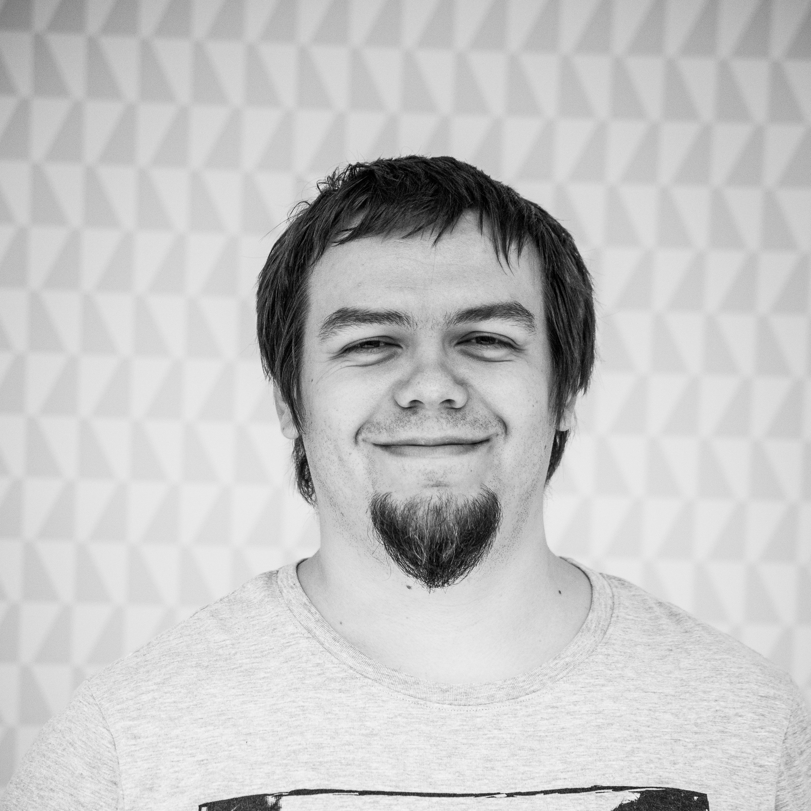
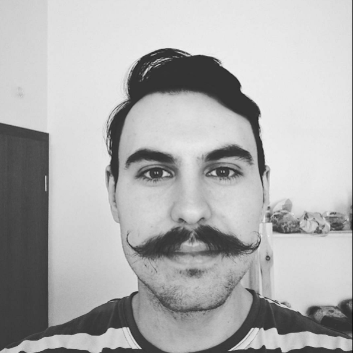
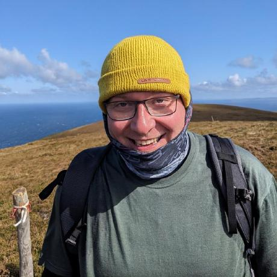
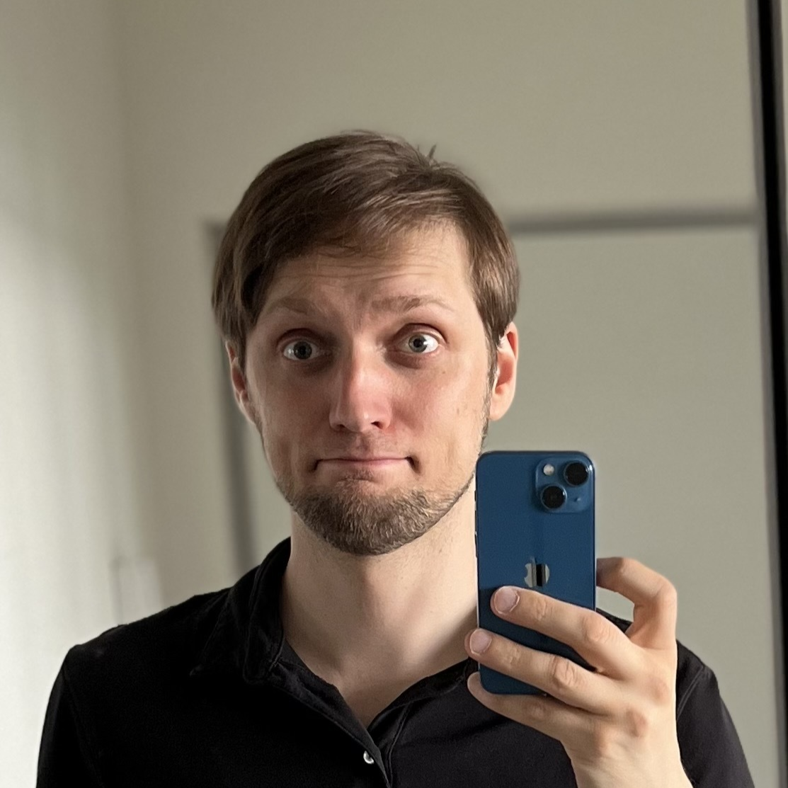
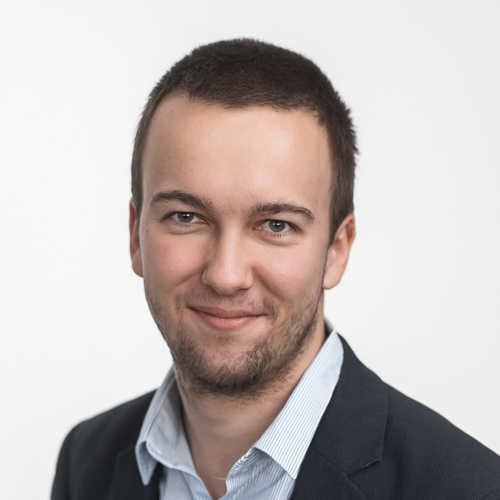
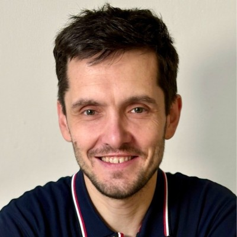
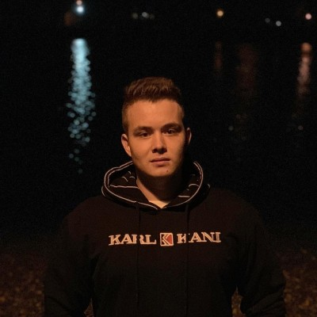

Program
9:00
Open door
Otevření dveří konference, rozdávání triček, hledání místa k sezení.
9:30

Úvodní slovo
Zahájení konference, uvodní slovo a organizační informace.
Václav Čevela
Vašek tvoří roky eshopy, školí elasticsearch, organizuje meetupy a konference v Brně. A když náhodou má čas tak do 4 do rána hraje factorio.
10:00

Mýty a Fakta o Event Sourcing
Přednáška se zaměřuje na detailní pochopení architektonického vzoru event sourcing, který uchovává stav systému pomocí událostí.
Vyvrací běžné mýty – například představu, že event sourcing je univerzálním řešením pro všechny projekty, že jeho implementace je příliš složitá nebo že s ním nelze efektivně dotazovat a reportovat data.
Přednáška naopak představuje fakta a reálné případové studie, které ukazují, jak správně navržený systém využívající event sourcing může výrazně snížit jeho složitost.
Tomáš Jurásek
Zajímám se o problematiku návrhu a vývoje distribuovaných systémů v .NET ekosystému. Pomáhám firmám při modernizaci jejich komplexních domén, kde je kladen důraz na správné chápání problematiky pro efektivní fungování celého systému.
11:00
Architecture of future
Podme sa zasnit ako budu vypadat web aplikacie v roku 2077.
Srigi
Skutočný full-stack developer so zameraním na React, TypeScript, Node.js a PostgreSQL.
Angel developer, ktorý pomáhal naštartovať projekty ako Eureka.club, Solved.fi, alebo Vectary.com.
Vo voľnom čase sa venujem micro-elektronike (mám doma malý HW lab).
12:00

Application Availability
Ukážeme si, proč by vás měla zajímat dostupnost vaši aplikace a možnosti, jak s ní pracovat.
Tomáš Kozák
Tomáš je vývojář, který se pohybuje ve světě DevOps. Má za sebou roky zkušeností s různými technologiemi a viděl víc kódu, než by bylo zdrávo – od moderních vychytávek až po historické relikvie.
13:00
Mikroservisní architektura webového front-endu v multi-týmovém prostředí
Ukážeme si, jak hybridní přístup k renderování webových stránek kombinuje techniky jako server-side rendering (SSR), client-side rendering (CSR) a statické generování (SSG). Dozvíte se, jak naše webové služby využívající mikroservisní architekturu, zjednodušují správu komplexních webových front-endů a výrazně zlepšují u živatelský zážitek.
Jan Novotný
Honza se v posledních letech zaměřuje na webový frontend. Ve firmě Oriflame Software řídí vývoj platformy pro webovou část e-commerce systému pro švédský Oriflame. Když nesedí za monitorem, tak ho potkáte makat na domě nebo vykukovat zpoza dungeon master screenu.
14:00

AI v ecommerce produkci
Předvedu vám skutečný případ z praxe, kdy automatizace pomocí AI ze dne na den zrušila pracovní pozice.
Společně krok za krokem projdeme celý proces převodu práce od lidí na AI: jak vypadají prompty, jak probíhá programování pro AI, jak se integruje do existujících systémů a jak je AI schopna zcela samostatně zvládnout pracovní úkoly.
Petr Soukup
Posledních 20 let programuju e-shopové ERP http://simplia.cz.
Aktuálně mě fascinují automatizace pomocí AI a mým ultimátním cílem je nahradit všechny lidi za AI skripty.
V robotické revoluci jsem na straně strojů.
15:00

Moderné CSS:
Scroll Driven Animácie s
Web Animations API
CSS sa posledné roky neuveriteľne vyvíja dopredu. Táto skvelá technológia je v súčasnosti veľmi silným nástrojom pre implementáciu vizuálnej logiky na webe. Problémy, ktoré sme roky riešili len pomocou JavaScriptu, vieme teraz vyriešiť pomocou pár šikovných CSS vlastností.
Výnimkou nie sú ani animácie závislé na interakcii užívateľa na webe. O webové animácie sa stará Web Animations API, ktoré dostalo veľký update. V súčasnosti sme schopní bez jedinej čiarky JavaScriptu vytvárať scroll driven animácie, od jednoduchých až po CSS-only parallax.
Na prednáške si ukážeme praktické ukážky postavené na nových CSS vlastnostiach, ktoré do Web Animations API pribudli za poslednú dobu.
Lukáš Chylík
Lukáš je frontend vývojár špecializujúci sa na vizuálnu logiku. Za posledných deväť rokov pracoval na rôznych projektoch, od prezentačných webových stránok cez komplexné webové aplikácie až po UI knižnice. Aktuálne pracuje pre firmu AIS servis, kde sa podieľa na implementácii Design systému pre vig.cz.
Tiež pomáhá vývojárom pri výbere vhodnej technológie a ponúka konzultácie, workshopy a školenia v tejto oblasti.
16:00

Zůstaňte v suchu: jak neopakovat kód, ale nepo💩 abstrakci
My vývojáři se neradi opakujeme. Snažíme se nacházet co nejlepší abstrakce, aby co nejvíc kódu zůstalo na jednom místě.
Jenže taková abstrakce se často stává svatou a zůstává nedotčená, zatímco byznysové požadavky se neustále proměňují.
V který moment je vhodné abstrakci rozebrat a přeskládat?
A kde jsou hranice kouzelné mantry „don’t repeat yourself“?
Jiří Pudil
Vede vývoj v IVY assistant, od bohatého doménového modelu v PHP, přes frontend v Reactu nebo SDK v Node.js, až po mobilní aplikace v Kotlin Multiplatform.
Když zrovna nesrká espresso a nebuší kód, můžete ho najít v čajovně u deskovky, na pohovce s gamepadem, na volejbalovém kurtu anebo s kytarou v ruce. Anebo třeba na pódiu na konferenci.
17:00

18:00

19:00
Závěrečné slovo
Poděkování účastníkům a řečníkům. A než se zahájíme afterparty dáme si vědomostní soutěž.
Následně v prostorech konference budeme pokračovat na afterparty, všichni jste zváni na networking a diskuzi s přednášejícími.
Václav Čevela
Vašek tvoří roky eshopy, školí elasticsearch, organizuje meetupy a konference v Brně. A když náhodou má čas tak do 4 do rána hraje factorio.
19:30

Afterparty
V prostorech konference vypukne afterparty, všichni jste zváni na networking a diskuzi s přednášejícími.
Webscientist
Hello!